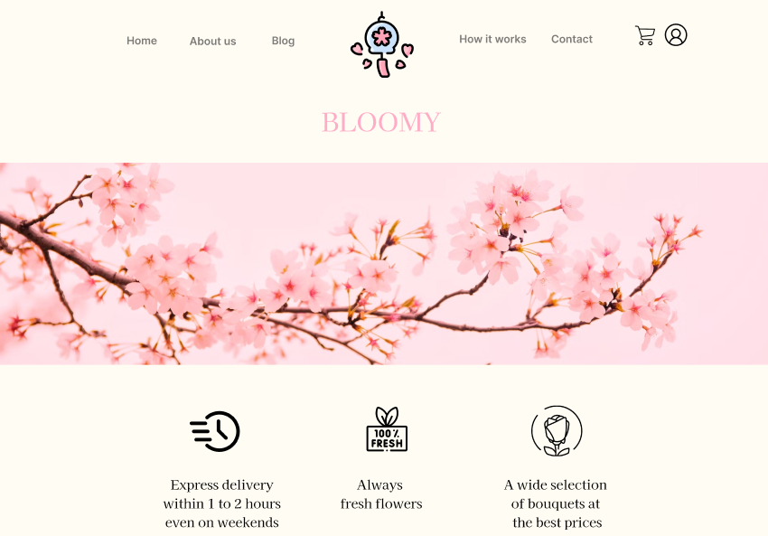

This was my Bachelor's thesis at FIIT STU, supervised by Ing. Eduard Kuric, PhD.
The goal was to investigate how visible hotspots in a clickable prototype affect user behaviour during usability testing. Hotspots are interactive elements that highlight clickable areas in a prototype — and while they simplify navigation, they might also mask real usability issues by guiding users too strongly.
To explore this, I designed a high-fidelity Figma prototype of a flower e-shop — intentionally built with usability flaws - and ran a comparative usability study with 70 participants split into two groups: one testing the prototype with visible hotspots, one without.
Two hypotheses were confirmed with statistical significance. Participants without hotspots completed significantly more tasks (87.9% vs. 73.6% success rate, p ≈ 0.004). And participants with hotspots made far more dead clicks - 684 vs. 361 total (p ≈ 0.0000036) - suggesting they were clicking around the highlighted areas rather than engaging with the interface meaningfully.
Differences in error rate and task completion time were observed between groups but were not statistically significant. Qualitative feedback revealed that participants with hotspots struggled more with filters and flower selection, while those without hotspots found navigation more demanding overall — consistent with the hypothesis that hotspots reduce cognitive effort but may also reduce real engagement.
This project taught me how to independently design and execute a full UX research study - from framing research questions and building a prototype, to running pilot tests, collecting data from real participants, and applying proper statistical methods to draw conclusions.
The most valuable insight was learning how to think critically about what metrics actually measure, and when a difference in data is meaningful versus just noise. Seeing statistically significant results emerge from real participant behavior, and being able to explain why, made the whole process feel genuinely rewarding.